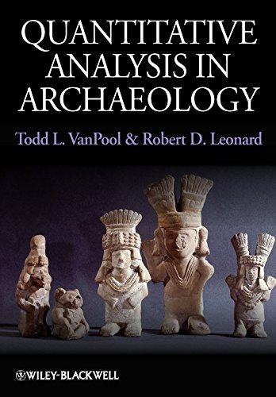
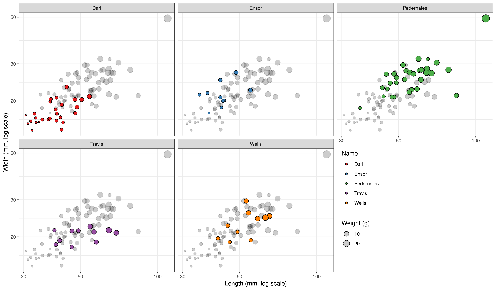

2 + 40[1] 42
Today’s goals…
2 + 40[1] 425^2[1] 25round(6.48^2)[1] 425 < 10[1] TRUEsqrt(1764)[1] 428 * 10^10[1] 8e+10x <- 1x[1] 1y <- 41x + y[1] 42x > y[1] FALSEz <- x - yz[1] -40(x + y)^2[1] 1764x <- 1
x[1] 1pi [1] 3.141593pi + 1[1] 4.141593<- is an assignment operator
(use Alt + - in RStudio to write it).
function(arguments).sqrt(x = 1764)[1] 42args(sqrt)function (x)
NULLround(pi)[1] 3args(round)function (x, digits = 0)
NULLround(pi, digits = 2)[1] 3.14c() (combine, concatenate)c("Fuu", "Bar")[1] "Fuu" "Bar"x <- c(1, 3, 5, 8)
x[1] 1 3 5 8x^2[1] 1 9 25 64is.vector(x)[1] TRUEx >= 4[1] FALSE FALSE TRUE TRUElength(x)[1] 4dfr x y z w
1 95 a TRUE 4.2
2 96 b FALSE 4.4
3 97 c FALSE 4.6
4 98 d TRUE 4.8is.data.frame(dfr)[1] TRUEncol(dfr)[1] 4nrow(dfr)[1] 4head(dfr, n = 2) x y z w
1 95 a TRUE 4.2
2 96 b FALSE 4.4$ operator returns a single column.colnames(dfr)[1] "x" "y" "z" "w"dfr$x[1] 95 96 97 98dfr$y[1] "a" "b" "c" "d"dfr$z[1] TRUE FALSE FALSE TRUEdfr$w / 2[1] 2.1 2.2 2.3 2.4dfr$x - dfr$w[1] 90.8 91.6 92.4 93.2str(dfr)'data.frame': 4 obs. of 4 variables:
$ x: int 95 96 97 98
$ y: chr "a" "b" "c" "d"
$ z: logi TRUE FALSE FALSE TRUE
$ w: num 4.2 4.4 4.6 4.8str(dfr)'data.frame': 4 obs. of 4 variables:
$ x: int 95 96 97 98
$ y: chr "a" "b" "c" "d"
$ z: logi TRUE FALSE FALSE TRUE
$ w: num 4.2 4.4 4.6 4.8"I am a string."[1] "I am a string."x <- 'I am also a string'
is.character(x)[1] TRUEis. prefix:is.numeric(), is.double() etc.dfr$x [1] 95 96 97 98is.numeric(dfr$x)[1] TRUEdfr$x + dfr$w[1] 99.2 100.4 101.6 102.8mean(dfr$x)[1] 96.5TRUE and FALSE in R.NA, ie. not available.Inf and -Inf for infinities.NULL for an object of a zero length.Plain-text document.
Practical exchange and preservation format for data sets.
Most open and commercial softwares will allow export in CSV.
Americas: separated by commas (,), period (.) as a decimal mark.
Europe: separated by semicolon (;), comma (,) as a decimal mark.
Comma separated:
read.csv(file = "path")
Semicolon separated:
read.csv2(file = "path")
Other delimiter:
read.table(file = "path", sep = "separator")

Adapted from Carlson 2011

Measurements on five types of dart points from Fort Hood in central Texas (Darl, Ensor, Pedernales, Travis, and Wells). The points were recovered during 10 different pedestrian survey projects during the 1980’s and were classified and measured by H. Blaine Ensor…
darts object?archdata::DartPointsread.csv(), ncol() and nrow(), str(), colnames()